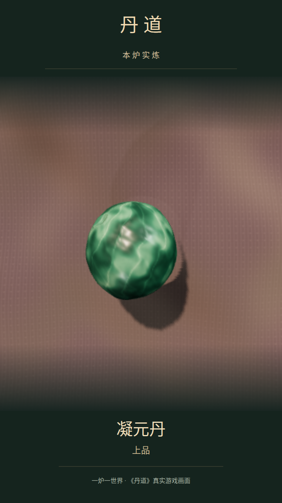
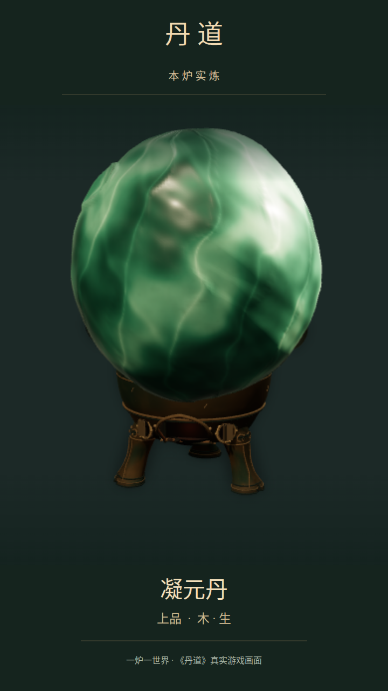
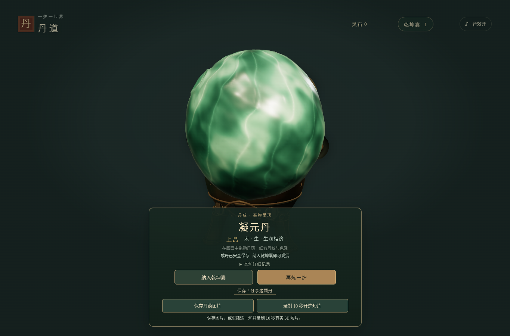

丹道 · P0-03 / 真实游戏媒体验收
开炉成丹，留下这一颗。
以下图片和视频直接来自真实 Three.js 游戏画面。短片使用 NVIDIA RTX 5070 Ti 硬件 Chrome 录制， 并非 AI 生成的丹药宣传片。
开炉短片 · 10 秒

乾坤囊 · 锦缎藏品与手机尺寸



205/205 代码测试通过；桌面 NVIDIA GPU、桌面软件 WebGL2、模拟手机浏览器的实际媒体导出通过。
仍需实体 iOS/Android 保存和帧率验收、短视频平台上传格式验证与真人分享率实验。本页仅用于产品视觉签收。